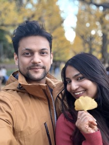

China: Our Adventure Awaits
Aman + Needhi — 16 days, 7 cities, infinite memories

Singapore Airlines
Booking Ref: EQGCEW — via Singapore Changi
Guangzhou — Arrival Day
Arrive 12:10 from Singapore. Dim sum capital of the world.


First Day Plan
Land at Baiyun Airport at 12:10, clear customs, grab SIM cards, head to hotel. Relaxed afternoon and evening to explore before the morning train to Yangshuo.
Where We Stay
LangYue Hotel — No. 10 Fulu Street, Liwan District (Hedong East Metro). Opened 2025, clean rooms with projection screens. Alternative: Banana Fun Hotel near Ergong Metro, Haizhu District.
Dim Sum Dinner
Diǎn Dū Dé (点都德) — the most authentic har gow, siu mai, char siu bao, and rice rolls you'll taste. Budget ¥80-100/person.
Beijing Road Walking Street
500m pedestrian street with ancient ruins beneath glass panels — 2,000-year-old road foundations from the Tang Dynasty. Snacks, tea, urban energy.


← Swipe to explore →
Next morning (Oct 17): HSR Guangzhou → Yangshuo, 09:00 → 11:30 (~2.5h). Book on Trip.com or 12306 app. Second class is spacious.
Yangshuo — Karst Paradise
HSR Guangzhou 09:00 → Yangshuo 11:30

Where We Stay
West Street (Xi Jie) area — Heart of Yangshuo's traveler scene. Cobblestone streets, cafes, bars. Close to the action but expect noise at night.
Day 1 — Countryside E-bike Ride
Pedal through the Ten-Mile Gallery as karst peaks tower on both sides. Yulong River winds alongside rice paddies — ancient stone bridges, local farmers. Rent e-bike for ¥50-80/day. Best in late afternoon when light turns golden.
Day 2 — Li River Bamboo Rafting
Drift through the Xingping section — the exact landscape on the Chinese 20 yuan note. 1.5-hour ride through dramatic gorges with cormorant fishermen. Then climb Laozhai Hill (20 min, 1,500 steps) for a 360° panorama of peaks in mist.


Chengdu — Pandas, Tea & Spice
HSR from Yangshuo (5.5h)

Giant Panda Research Base
Baby pandas tumbling off logs, play-fighting siblings, napping in trees. Morning session (before 10 AM) is when cubs are most active. This alone makes Chengdu unforgettable.
People's Park & Kuanzhai Alley
Sip jasmine tea in a bamboo chair while locals practice tai chi. Wander restored Qing-dynasty lanes — snack stalls, face-changing opera performers, Sichuan pepper everything.
Chunxi Road — Neon Nights
Chengdu's Times Square. Pedestrian street packed with flagship stores, street performers, endless food. Best at night when neon signs glow.


← Swipe to explore →
Jiuzhaigou — Valley of Nine Villages
HSR from Chengdu (~2.5h). Peak autumn foliage.


← Swipe to explore →
Getting There (Oct 20)
Morning: People's Park tea, Kuanzhai Alley, hotpot lunch. Afternoon: HSR Chengdu → Jiuhuang (16:02–18:27). Shuttle bus or taxi (45 min) to park entrance.
Where We Stay
Lavande Hotel (Jiuzhaigou Tourist Center) — Huodiba, Longkang Village. Rating 9.5/10. Walking distance to park entrance. Bianbian Street nearby for food.
The Y-Shaped Valley Strategy (Oct 21)
Pro tip: Take shuttle to the TOP of Rize Valley first (Long Lake), walk DOWN through highlights. Saves energy, fewer crowds. Park covers 72,000 hectares — use shuttles.
Must-see route: Long Lake → Five Flower Lake (submerged trees in turquoise water) → Pearl Shoal Waterfall → Mirror Lake → Nuorilang Waterfall (China's widest) → Shuzheng Valley if time permits.
October = peak autumn foliage. Golden leaves reflecting in crystal-clear water. Arrive at 8 AM — lakes are most mirror-like before crowds stir the water.
Return (Oct 21 Evening)
Full day in park (08:00–17:00). Evening train back: HSR Jiuhuang → Chengdu (19:00–21:24).
Chongqing — The Cyberpunk City
HSR Chengdu 09:00 → Chongqing 10:30

Where We Stay
Jiefangbei / Hongyadong area — Right on top of the action. Holiday Riverview Hotel has views of Qiansimen Bridge, ~$30/night.
Day 1 — Qiansimen Bridge, Hongyadong & Jiefangbei
Qiansimen Bridge: Best elevated view of Chongqing's layered architecture — monorails, skyscrapers rising from cliffs. Hongyadong: 11-story building cascading down a cliff. Thousands of golden lanterns at night — straight out of Spirited Away. Jiefangbei: Times Square meets Shibuya.
Day 2 — Liziba, Shibati & Yangtze Cableway
Liziba: Monorail passes THROUGH a residential building. Peak Chongqing absurdity. Shibati (18 Stairs): Restored historical neighborhood — steep staircases, food alleys, views of the modern skyline. Yangtze Cableway: Vintage cable car crossing the river.


Day 3 — Wulong Karst Day Trip
Getting there: HSR to Wulong South (45 min) → shuttle to Tourist Center (45 min, ¥16). Three Natural Bridges: Colossal stone arches accessed via glass elevator. UNESCO site, Transformers 4 filming location. Walk takes 2-3 hours. Book return train early — popular slots fill fast.


← Swipe to explore →
Zhangjiajie — Avatar's Pandora
HSR from Chongqing (5h). The floating mountains.


← Swipe to explore →
Avatar Hallelujah Mountain
The real-life inspiration for Pandora's floating mountains. Thousand-meter sandstone pillars wrapped in clouds. James Cameron confirmed this was the visual reference. Walking among the peaks feels like another planet.
Bailong Elevator
World's tallest outdoor elevator — 326 meters up a sheer cliff face in a glass cabin. 90 seconds from valley floor to cloud-wrapped summit.
Tianmen Mountain — Heaven's Gate
World's longest cable car (7.5 km) from city center to peak. Glass skywalk bolted to cliff face 1,400m up. Descend 999 steps through the natural arch of Heaven's Gate — a massive hole through the mountain.

Ancient Towns — Choose Your Afternoon (Oct 28)
After Tianmen Mountain in the morning, we have the afternoon free. Two options — both are stunning ancient riverside towns, but very different vibes. We pick one.


Current lean: Fenghuang for the night photography and river atmosphere, but Furong is closer and our legs might appreciate fewer stairs after Tianmen. We can decide on the morning of Oct 28 based on energy levels.
Guangzhou & Shenzhen — Final Days
HSR return (6h) · Shenzhen day trip · Fly home Oct 31


Guangzhou — Dim Sum Capital
Birthplace of Cantonese cuisine. Mornings with yum cha — bamboo baskets of har gow, siu mai, char siu bao, silky congee. The food alone is worth the stop.
Shenzhen Day Trip (Oct 30)
30 minutes by train from Guangzhou. Fishing village to megacity in 40 years. OCT-LOFT creative park, Lianhuashan Park for skyline views, Futian light show at night.
Day-by-Day Itinerary
| Day | Date | City | Plan |
|---|---|---|---|
| 1 | Oct 16 | Guangzhou | Arrive 12:10. LangYue Hotel. Beijing Road, dim sum dinner. |
| 2 | Oct 17 | Yangshuo | HSR 09:00→11:30. E-bike Ten-Mile Gallery. West Street dinner. |
| 3 | Oct 18 | Yangshuo | Li River bamboo raft (Xingping). Laozhai Hill sunset. |
| 4 | Oct 19 | Chengdu | HSR 08:30→14:20 (5.5h). Chunxi Road, Sichuan dinner. |
| 5 | Oct 20 | Jiuzhaigou | Morning: People's Park, Kuanzhai Alley, hotpot. HSR 16:02→18:27. |
| 6 | Oct 21 | Jiuzhaigou | 08:00 park entry. Y-valley, Five Flower Lake. HSR 19:00→21:24 back. |
| 7 | Oct 22 | Chengdu | Panda Base at 8 AM. Jinli Street evening. |
| 8 | Oct 23 | Chongqing | HSR 09:00→10:30. Qiansimen Bridge, Hongyadong after dark. |
| 9 | Oct 24 | Chongqing | Liziba Monorail, Shibati, Yangtze Cableway. Hotpot dinner. |
| 10 | Oct 25 | Wulong | Day trip: HSR to Wulong South → Three Natural Bridges. |
| 11 | Oct 26 | Zhangjiajie | HSR 08:30→11:00. Golden Whip Stream forest walk. |
| 12 | Oct 27 | Zhangjiajie | Tianzi Mountain + Avatar peaks + Bailong elevator. |
| 13 | Oct 28 | Zhangjiajie | Tianmen Mountain (999 steps). Afternoon: Fenghuang or Furong. |
| 14 | Oct 29 | Guangzhou | HSR 09:00→15:00 (6h). Relaxed evening. |
| 15 | Oct 30 | Shenzhen | HSR 30 min. OCT-LOFT, Futian light show. |
| 16 | Oct 31 | Home | Flight CAN 13:30→SIN→BLR 21:50. |
Food We Cannot Miss
The non-negotiable eating agenda across 4 culinary regions
Cantonese — Guangzhou Days 1, 14–16


Sichuan — Chengdu Days 4–7


Chongqing Style Days 8–10


Yangshuo & Street Food Days 2–3
What to Buy
Based on Reddit r/travel + r/Chinavisa recommendations
Electronics & Tech Shenzhen, Guangzhou
DJI drones — 15-20% cheaper than US/India. Flagship stores in Guangzhou and Shenzhen. Mini 4 Pro, Osmo Action 5, Pocket 3.
Xiaomi — Mi Bands, smart home gadgets at fraction of export prices. Xiaomi Home stores everywhere.
Huaqiangbei Market (Shenzhen) — World's largest electronics market. Cables, chargers, accessories.
Skip: iPhones (same price globally), laptops (Chinese keyboard layout).
Fashion & Clothing All cities
Silk — Scarves, pajamas, bedding at great prices. Chengdu and Guangzhou have good shops.
Cashmere — Inner Mongolia quality. Erdos brand is reliable. 100% cashmere sweaters.
Tailored suits — Custom in 24-48 hours. Shenzhen/Guangzhou markets copy any design.
Outdoor gear — Kailas, Toread at 30-50% of Western brands. Good for hiking gear.
Tea & Food Gifts Chengdu, Guangzhou
Chinese tea — Longjing (Dragon Well), Pu'er, Tieguanyin oolong. Buy from specialty tea shops, not tourist markets.
Sichuan peppercorns — Vacuum-sealed in Chengdu. The numbing spice that defines the cuisine.
White Rabbit Candy — Classic Chinese milk candy. Nostalgia in a wrapper. Great gifts.
Chili oil / Lao Gan Ma — Stock up on crispy chili oil. Heavy but worth it.
Culture & Souvenirs Everywhere
Calligraphy brushes — Lake Pen (Huzhou). Also ink stones and rice paper.
Jade & pearls — Only buy from certified shops. Fake jade is everywhere. Freshwater pearls are affordable.
Panda merch — Official Panda Base shop in Chengdu has quality items. Skip random tourist stalls.
Cloisonné — Traditional enamel work on copper. Beautiful and unique.
Pro tips: Bargain in markets (start at 30% asking). Use WeChat Pay for better deals. Keep receipts for expensive items. Declare electronics at customs if over ₹50,000 total.
Practical Info
Weather in October
South (Guangzhou, Yangshuo): 20-28°C — summer clothes + light layer
Central (Chengdu, Chongqing): 15-22°C — comfortable, light jacket
Mountains (Jiuzhaigou, Zhangjiajie): 5-15°C — warm fleece + rain jacket essential
October = golden autumn. Peak foliage in mountains. Best time to visit.
Getting Around
HSR (High-Speed Rail): Book on Trip.com 15 days ahead. 2nd class is spacious (more legroom than business class flights). Trains run on the minute. Bring passport to the station.
Local transport: Didi (Chinese Uber) for taxis — works with international cards. Metro in all major cities. Keep hotel address screenshot in Chinese on phone for taxi drivers.
Airport: Baiyun (CAN) is well-connected by metro. Allow 2h before international flights.
Money & Internet
Payments: WeChat Pay / Alipay works everywhere — even street food vendors. Link international Visa/Mastercard before departure. Cash is rarely needed but keep ¥500 as backup.
Internet: China Unicom eSIM or Airalo for data. Covers all cities.
VPN: Required for Google, WhatsApp, Instagram, YouTube. Pre-install and test before departure. ExpressVPN or Astrill work best in China.
Offline prep: Download Google Maps offline for all cities. Save hotel addresses in Chinese. Download Pleco dictionary app.
Pack List
Comfortable walking shoes (10k+ steps/day, tested before trip)
Rain jacket (mountains = unpredictable mist)
Warm fleece for Jiuzhaigou mornings (5°C at 8 AM)
Power bank 20,000mAh (long train days, full day in parks)
Passport copies — hotels check at check-in, keep digital + paper
Offline Chinese translation app (Pleco or Google Translate downloaded)
Motion sickness meds (Wulong mountain roads are windy)
Universal plug adapter (China uses Type A/I)
Trip Bucket List
The moments that will make this unforgettable
Once-in-a-Lifetime Moments
- Sunrise at Xingping — Watch the 20-yuan landscape emerge from morning mist on the Li River
- Baby Pandas at Play — Arrive at opening (8 AM) when the cubs are tumbling and wrestling
- Bailong Elevator — 90 seconds straight up a cliff face in a glass cabin. 326 meters.
- Tianmen Heaven's Gate — Descend 999 steps through a literal hole in the mountain
- Chongqing at Night — Hongyadong lit up like we walked into a Studio Ghibli scene
- Jiuzhaigou Mirror Lake — Autumn foliage reflecting in water so clear you can't tell which way is up
Experience Checklist
- Order hotpot by pointing at the picture menu with zero comprehension
- Find a mala spice level we can handle without crying
- Take the HSR at 350 km/h and pretend that's normal
- Bargain at a market in broken Mandarin and feel unreasonably proud
- Pay for street food with WeChat face-scan like a local
- Walk a glass skywalk without looking down (unlikely but aspirational)
- Find the secret dim sum spot that only locals know about
- Successfully navigate a Chinese train station with only screenshots
Estimated Costs (for both)
Full Breakdown
| Category | Estimated (INR) | Notes |
|---|---|---|
| Flights (BLR-GZ-BLR) | 1,20,000 | Singapore Airlines — booked |
| Hotels (15 nights) | 1,10,000–1,25,000 | Mid-range, Reddit-recommended |
| HSR Trains | 45,000–52,000 | All legs, 2nd class |
| Attractions | 28,000–34,000 | Pandas, rafting, parks, cable cars |
| Food (16 days) | 28,000–35,000 | Street food + restaurants + hotpot |
| Local Transport | 12,000–15,000 | Didi, metro, shuttles |
| Visa + SIM + Buffer | 24,000–26,000 | Everything else |
Frequently Anxious Questions
Valid concerns, mostly valid answers
Wait, neither of us speaks Mandarin?
7 cities in 16 days — are we going to be exhausted?
No Google, no Instagram, no WhatsApp — how do we survive?
Can we hold a baby panda?
I can barely handle Indian spicy — what about Sichuan food?
The glass skywalk — do I actually have to do that?
What if I don't like the food somewhere?
How much walking are we actually talking?
One carry-on for 16 days? Seriously?
What's the plan if something goes wrong?
This is happening. Flights booked. Hotels sorted. 16 days of ancient mountains in clouds, neon cities from sci-fi films, pandas being ridiculous, food that will ruin every other cuisine, and the two of us exploring a country that has to be seen to be believed.